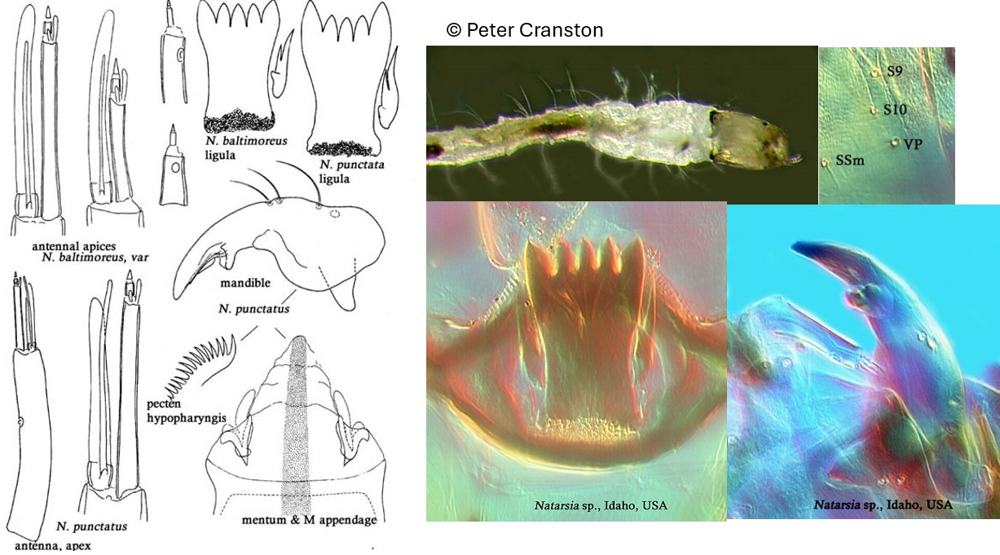

Natarsia (Fittkau, 1962)

Indice Céphalique
0.60-0.70.
Ratio antennaire
1.7-3.0.
Mandibules
Mandibules progressivement incurvées. Dent apicale 2x aussi longue que la largeur basale. Dent apicale s'étend jusqu'à la dent accessoire conique. Mola fortement élargie.
Tubules anaux
Tubules anaux en forme de fuseau, environ 4x aussi long que large.
Procercus
6-7x plus long que large, avec 7 soies apicales.
Parapode postérieur
Griffes simples. Environ 13-15; grandes griffes avec de petits épines sur le côté interne et / ou externe.
Soies céphaliques ventrales
VP rond, postérolatéral à S9 et S10, et antérolatéral à SSm ; S10 distant de S9.
Ecologie
Le genre Natarsia est présente dans les eaux froides des cours d’eau et des zones littorales des lacs.
Espèces recensées en France
2 : N. nugax, N. punctata.